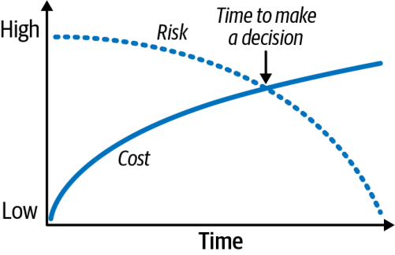
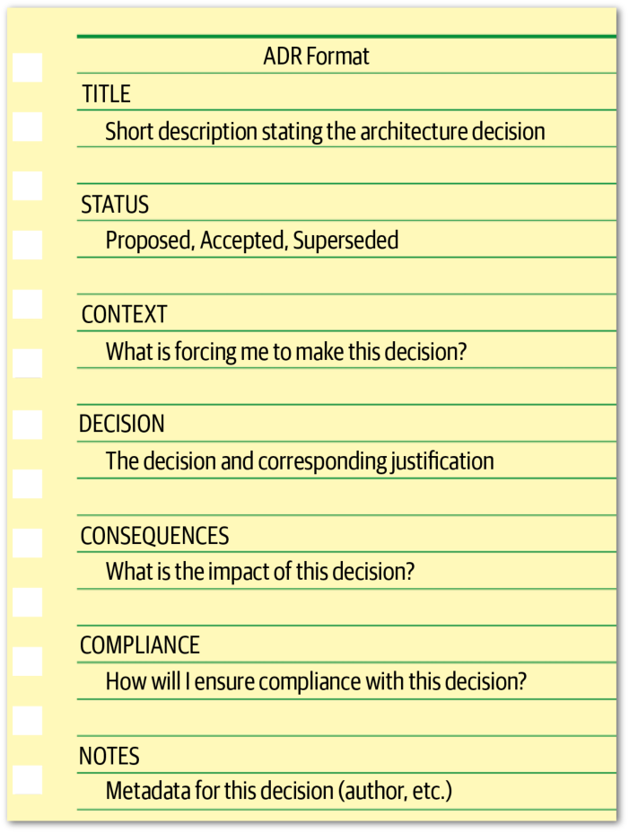
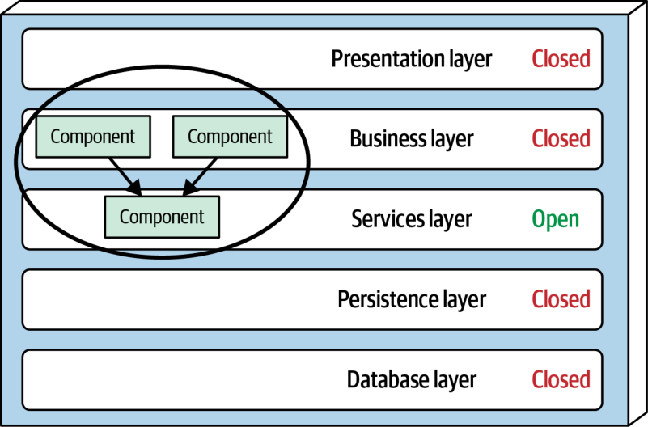
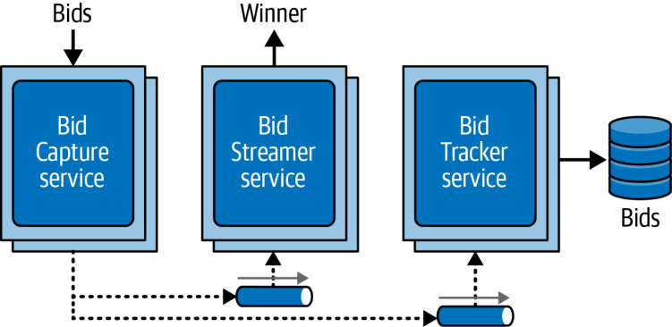
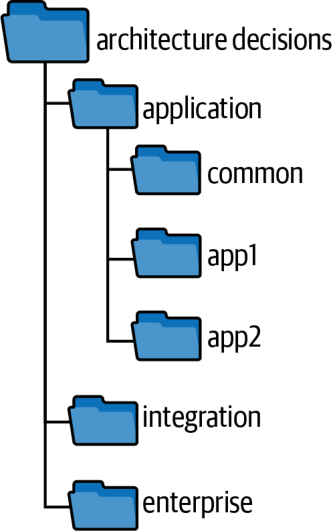

بخش سوم: فنون و مهارتهای نرم
یک معمار نرمافزارِ اثربخش نهفقط باید جنبههای فنیِ معماری نرمافزار را بشناسد، بلکه باید فنون اصلی و مهارتهای نرم (soft skills) لازم برای اندیشیدن مانند یک معمار، هدایت تیمهای توسعه و انتقال اثربخش معماری به ذینفعان گوناگون را نیز در اختیار داشته باشد. این بخش از کتاب به فنون کلیدی و مهارتهای نرمی میپردازد که برای تبدیل شدن به یک معمار نرمافزار اثربخش لازماند.
یکی از انتظارات اصلی از یک معمار، گرفتنِ تصمیمات معماری (architectural decisions) است. تصمیمات معماری معمولاً به ساختار برنامهٔ کاربردی یا سیستم مربوطاند، اما ممکن است تصمیمهای فناورانه را نیز در بر بگیرند؛ بهویژه هنگامی که آن تصمیمهای فناورانه بر ویژگیهای معماری اثر میگذارند. بافتار هرچه باشد، تصمیم معماریِ خوب تصمیمی است که به تیمهای توسعه در انتخابهای فنیِ درست کمک کند. گرفتنِ تصمیمات معماری مستلزم گردآوریِ اطلاعات مرتبطِ کافی، توجیه تصمیم، مستندسازیِ آن و انتقال اثربخش آن به ذینفعان (stakeholders) مناسب است.
برنامهنویس Andrew Koenig ضدالگو (antipattern) را چیزی تعریف میکند که در آغاز ایدهٔ خوبی به نظر میرسد، اما شما را به دردسر میاندازد. تعریف دیگری از ضدالگو، فرایندی تکرارپذیر است که نتایج منفی به بار میآورد. سه ضدالگوی رایج در تصمیمگیری معماری که هنگام تصمیمگیریِ معمار ممکن است پدید آیند (و معمولاً هم پدید میآیند) عبارتاند از: ضدالگوی «خود را پوشش بده» (Covering Your Assets)، ضدالگوی «روز موشخرما» (Groundhog Day) و ضدالگوی «معماری ایمیلمحور» (Email-Driven Architecture). این سه ضدالگو معمولاً روندی پیشرونده دارند: غلبه بر ضدالگوی «خود را پوشش بده» به ضدالگوی «روز موشخرما» میانجامد و غلبه بر آن، به ضدالگوی «معماری ایمیلمحور». گرفتنِ تصمیمات معماریِ اثربخش و دقیق مستلزم غلبه بر هر سه است.
ضدالگوی «خود را پوشش بده» زمانی رخ میدهد که معمار از ترس انتخاب نادرست، از گرفتنِ یک تصمیم معماری طفره میرود یا آن را به تعویق میاندازد. دو راه برای غلبه بر آن وجود دارد. نخست اینکه برای گرفتنِ یک تصمیم معماریِ مهم تا آخرین لحظهٔ مسئولانه (last responsible moment) صبر کنید؛ یعنی زمانی که اطلاعات کافی برای توجیه و اعتبارسنجیِ تصمیم وجود دارد، اما نه آنقدر دیر که تیمهای توسعه معطل بمانند یا معمار به ضدالگوی فلج تحلیلی (Analysis Paralysis) دچار شود؛ ضدالگویی که در آن معمار برای همیشه در تحلیل تصمیم گیر میافتد. یک راه خوب برای تعیین آخرین لحظهٔ مسئولانه این است که بپرسید چه زمانی هزینهٔ به تعویق انداختنِ تصمیم از ریسکِ تصمیمگرفتن فراتر میرود. چنانکه در شکل ۲۱-۱ نشان داده شده، توجه کنید که در مراحل آغازینِ مقیاس زمانیِ تصمیمگیری، هزینه (که با خط پیوسته نشان داده شده) پایین است، زیرا زمان کمتری صرف تصمیمگیری شده؛ اما ریسک (که با خطچین نشان داده شده) بالاست، زیرا دانستهها دربارهٔ مسئله یا راهحل کمتر است. صرف زمان بیشتر برای به تعویق انداختنِ تصمیم هزینه را افزایش میدهد، اما ریسک را نیز کاهش میدهد، زیرا معمار میتواند تحلیل کاملتری از مسئله و گزینههای ممکن انجام دهد. زمانِ تصمیمگیری جایی است که این دو عامل یکدیگر را قطع میکنند و افزایش هزینه از کاهش ریسک فراتر میرود.

راه دیگر برای پرهیز از این ضدالگو، همکاری با تیمهای توسعه است تا اطمینان حاصل شود که تصمیم را میتوان همانگونه که انتظار میرود پیادهسازی کرد. این کار اهمیتی حیاتی دارد، زیرا هیچ معماری نمیتواند تکتک جزئیاتِ هر مسئلهٔ مرتبط با یک فناوری مشخص را بداند. معمار با همکاری نزدیک با تیمهای توسعه میتواند سریع واکنش نشان دهد، بینش بیشتری به دست آورد و ریسک نادرست بودنِ تصمیم را کاهش دهد.
برای روشن شدنِ این نکته، فرض کنید شما در نقش معمار تصمیم میگیرید که همهٔ دادههای مرجعِ (reference data) مرتبط با محصول (مانند توضیحات محصول، وزن و ابعاد) در همهٔ نمونههای سرویسی که به آن اطلاعات نیاز دارند کش شوند. تصمیم میگیرید این کار با یک کش تکثیرشدهٔ فقطخواندنی انجام شود که مالکیت کش اصلی با سرویس Catalog است. (کش تکثیرشده یا درونحافظهای یعنی اگر اطلاعات محصول تغییر کند یا محصول تازهای افزوده شود، سرویس Catalog کش خود را بهروزرسانی میکند و این کش سپس از طریق یک محصول کش تکثیری به همهٔ سرویسهای دیگری که به آن داده نیاز دارند تکثیر میشود.) توجیه شما برای این تصمیم، کاهش کوپلینگ میان سرویسها و اشتراک اثربخش دادهها بدون نیاز به فراخوانی میانسرویسی است. اما تیمهای توسعهای که این تصمیم معماری را پیادهسازی میکنند درمییابند که به دلیل نیازمندیهای مقیاسپذیریِ برخی سرویسها، این تصمیم به حافظهٔ درونفرایندیِ (in-process memory) بیشتری از مقدار موجود نیاز دارد. از آنجا که با این تیمها همکاری نزدیکی دارید، بهسرعت از مشکل آگاه میشوید و تصمیم معماری خود را بر همین اساس اصلاح میکنید.
ضدالگوی «روز موشخرما» زمانی رخ میدهد که افراد نمیدانند چرا معمار تصمیم مشخصی گرفته است؛ از این رو، بارها و بارها دربارهاش بحث میکنند و هرگز به نتیجه یا توافق نهایی نمیرسند. نام این ضدالگو از فیلم Groundhog Day (روز موشخرما) محصول سال ۱۹۹۳ گرفته شده است که در آن، شخصیتِ Bill Murray ناچار است هر روز، بارها و بارها، دوم فوریه را از نو زندگی کند.
این ضدالگو به این دلیل رخ میدهد که معماران تصمیم خود را توجیه نمیکنند (یا بهطور کامل توجیه نمیکنند). ارائهٔ هر دو نوع توجیهِ فنی (technical justification) و کسبوکاری (business justification) برای یک تصمیم معماری اهمیت دارد.
برای مثال، فرض کنید تصمیم میگیرید یک برنامهٔ کاربردیِ تکپارچه را به سرویسهای جداگانه بشکنید. توجیه شما این است که جنبههای کارکردیِ برنامه را از هم جدا کنید تا هر بخش از برنامه از منابع کمتری از ماشین مجازی استفاده کند و بتوان آن را جداگانه نگهداری و مستقر کرد. هرچند این توجیه فنیِ خوبی است، آنچه کم است توجیه کسبوکاری است؛ به بیان دیگر، چرا کسبوکار باید هزینهٔ این بازآرایی (refactoring) معماری را بپردازد؟ یک توجیه کسبوکاریِ خوب برای این تصمیم ممکن است عرضهٔ سریعترِ کارکردهای کسبوکاریِ تازه و در نتیجه بهبود زمان عرضه به بازار (time to market) باشد. توجیه دیگر ممکن است کاهش هزینههای مرتبط با توسعه و انتشار قابلیتهای تازه باشد.
ارائهٔ ارزش کسبوکاری در توجیه یک تصمیم معماری اهمیتی حیاتی دارد. این کار همچنین محک (litmus test) خوبی برای تعیین این است که آیا اصلاً باید آن تصمیم معماری را گرفت یا نه. اگر تصمیم هیچ ارزش کسبوکاریای فراهم نکند، شاید معمار باید در آن بازنگری کند.
چهار مورد از رایجترین توجیههای کسبوکاری عبارتاند از: هزینه، زمان عرضه به بازار، رضایت کاربر (user satisfaction) و جایگاهیابی راهبردی (strategic positioning). در نظر بگیرید چه چیزی برای ذینفعان کسبوکار اهمیت دارد. اگر ذینفعان کسبوکار بیشتر نگران زمان عرضه به بازار باشند، توجیه یک تصمیم مشخص صرفاً بر پایهٔ صرفهجویی در هزینه ممکن است انتخاب درستی نباشد.
پس از آنکه معمار تصمیمهایش را گرفت و بهطور کامل توجیه کرد، اغلب ضدالگوی معماریِ دیگری پدید میآید: معماری ایمیلمحور. این ضدالگو زمانی رخ میدهد که افراد یک تصمیم معماری را گم میکنند یا فراموش میکنند، یا حتی نمیدانند که چنین تصمیمی گرفته شده و بنابراین به هیچ وجه نمیتوانند آن را پیادهسازی کنند. غلبه بر این ضدالگو یکسره به انتقال اثربخش تصمیمات معماری بستگی دارد. ایمیل ابزار بسیار خوبی برای ارتباط است، اما سامانهٔ ضعیفی برای نگهداری اسناد است.
خوشبختانه، معمار با یادگرفتنِ شیوهٔ انتقال اثربخش تصمیمات معماری میتواند بهآسانی از ضدالگوی معماری ایمیلمحور پرهیز کند. نخست، مطمئن شوید که خودِ تصمیم را در متن ایمیل نمیگنجانید. این کار چندین سیستم مرجع (systems of record) برای آن تصمیم پدید میآورد، زیرا هر ایمیل نسخهای از تصمیم را در خود دارد، به جای آنکه تصمیم تنها در یک جا نگهداری شود. بسیاری از چنین ایمیلهایی جزئیات مهم تصمیم (از جمله توجیه آن) را از قلم میاندازند و دوباره ضدالگوی «روز موشخرما» را پدید میآورند. همچنین اگر آن تصمیم معماری روزی تغییر کند یا تصمیم دیگری جایگزینش شود، دشوار است بدانیم آیا همهٔ افراد مرتبط تصمیم بازنگریشده را دریافت کردهاند یا نه.
رویکرد بهتر این است که در متن ایمیل تنها به ماهیت و بافتار تصمیم اشاره کنید و پیوندی به سیستم مرجعِ واحدی بدهید که تصمیم معماری و جزئیات مربوط به آن در آن نگهداری میشود (چه پیوندی به یک صفحهٔ ویکی باشد و چه ارجاعی به سندی در یک سامانهٔ فایل).
ایمیل زیر را دربارهٔ یک تصمیم معماری در نظر بگیرید:
«سلام Sandra، دربارهٔ ارتباط میان سرویسها تصمیم مهمی گرفتهام که مستقیماً بر شما اثر میگذارد. لطفاً تصمیم را از طریق پیوند زیر ببینید…»
توجه کنید که در عبارت آغازینِ جملهٔ نخست، به بافتار (ارتباط میان سرویسها) اشاره شده، اما به خودِ تصمیم نه. بخش دوم جملهٔ نخست نیز مهم است: اگر یک تصمیم معماری مستقیماً بر کسی اثر نمیگذارد، چرا باید او را با آن به زحمت انداخت؟ این محک بسیار خوبی برای تعیین این است که کدام ذینفعان (از جمله توسعهدهندگان) باید مستقیماً از یک تصمیم معماری آگاه شوند. جملهٔ دوم در این نمونه پیوندی به محل واحدِ تصمیم معماری میدهد و به این ترتیب یک سیستم مرجعِ واحد برای تصمیمها فراهم میکند.
بسیاری از معماران بر این باورند که اگر تصمیمی به یک فناوری مشخص مربوط باشد، آن تصمیم نه تصمیمی معماری، بلکه تصمیمی فنی (technical decision) است. این باور همیشه درست نیست. اگر معمار تصمیم بگیرد از فناوری مشخصی استفاده کند، چون آن فناوری مستقیماً از یک ویژگی معماریِ مشخص (مانند کارایی یا مقیاسپذیری) پشتیبانی میکند، آن تصمیم همچنان تصمیمی معماری است.
Michael Nygard، معمار نرمافزار سرشناس و نویسندهٔ ویراست دوم کتاب Release It! (Pragmatic Bookshelf، ۲۰۱۸)، با ابداع اصطلاح دارای اهمیت معماری (architecturally significant) به این مسئله پرداخته است که معمار باید مسئول چه تصمیمهایی باشد (و بنابراین تصمیم معماری از چه تشکیل میشود). به گفتهٔ Nygard، تصمیمهای دارای اهمیت معماری تصمیمهاییاند که بر ساختار، ویژگیهای غیرکارکردی، وابستگیها، واسطها یا فنون ساختِ سیستم اثر میگذارند.
ساختار (structure) در این بافتار به تصمیمهایی اشاره دارد که بر الگوها یا سبکهای معماریِ بهکاررفته اثر میگذارند. برای مثال، تصمیم معمار به اشتراکگذاری کد میان مجموعهای از میکروسرویسها بر زمینهٔ محدودِ (bounded context) میکروسرویس اثر میگذارد و در نتیجه، ساختار سیستم را تحت تأثیر قرار میدهد.
ویژگیهای غیرکارکردیِ (non-functional characteristics) سیستم همان ویژگیهای معماریای هستند که برای سیستمِ در حال توسعه یا نگهداری اهمیت دارند. برای مثال، اگر انتخاب یک فناوری بر کارایی اثر بگذارد و کارایی جنبهٔ مهمی از برنامهٔ کاربردی باشد، آن انتخاب به یک تصمیم معماری تبدیل میشود؛ حتی اگر محصول، چارچوب یا فناوری مشخصی را تعیین کند.
وابستگیها (dependencies) به نقاط کوپلینگ میان مؤلفهها و/یا سرویسهای درون سیستم اشاره دارند. وابستگیها میتوانند بر ویژگیهای معماریای مانند مقیاسپذیری، ماژولاریتی، چابکی، آزمونپذیری، قابلیت اطمینان و جز آن اثر بگذارند؛ از این رو، تصمیمهای مربوط به وابستگیها به تصمیمات معماری تبدیل میشوند.
واسطها (interfaces) به شیوهٔ دسترسی به سرویسها و مؤلفهها و ارکستراسیون آنها اشاره دارند: معمولاً از طریق یک دروازه، هاب یکپارچهسازی، گذرگاه سرویس (service bus)، مبدل یا پراکسی API. تصمیمگیری دربارهٔ واسطها معمولاً شامل تعریف قراردادها، از جمله راهبردهای نسخهبندی و منسوخسازی، است. واسطها بر دیگرانی که از سیستم استفاده میکنند اثر میگذارند و بنابراین دارای اهمیت معماریاند.
سرانجام، فنون ساخت (construction techniques) به تصمیمهایی دربارهٔ پلتفرمها، چارچوبها، ابزارها و حتی فرایندهایی اشاره دارند که هرچند ماهیتی فنی دارند، ممکن است بر جنبهای از معماری اثر بگذارند.
یکی از اثربخشترین راههای مستندسازی تصمیمات معماری، سوابق تصمیم معماری (Architectural Decision Records یا ADRs) است. Michael Nygard نخستین بار در سال ۲۰۱۱ در یک پست وبلاگی به ترویج ADRها پرداخت و در سال ۲۰۱۷، Thoughtworks Technology Radar این فن را برای پذیرش گسترده توصیه کرد.
هر ADR از یک فایل متنی کوتاه (معمولاً یک تا دو صفحه) تشکیل میشود که یک تصمیم معماریِ مشخص را توصیف میکند. هرچند ADRها را میتوان با متن ساده یا در قالب الگوی یک صفحهٔ ویکی نوشت، معمولاً در نوعی قالب سند متنی، مانند AsciiDoc یا Markdown، نوشته میشوند.
ابزارهایی نیز برای مدیریت ADRها در دسترس است. Nat Pryce، از نویسندگان کتاب Growing Object-Oriented Software, Guided by Tests (Addison-Wesley، ۲۰۰۹)، ابزاری آزاد به نام ADR Tools نوشته است که یک واسط خط فرمان (command-line interface) برای مدیریت ADRها فراهم میکند؛ از جمله طرحهای شمارهگذاری، محل نگهداری و منطق جایگزینی. Micha Kops، مهندس نرمافزاری از آلمان، نمونههای بسیار خوبی از کاربرد ADR Tools برای مدیریت سوابق تصمیم معماری ارائه کرده است.
ساختار پایهٔ هر ADR از پنج بخش اصلی تشکیل میشود: عنوان (Title)، وضعیت (Status)، بافتار (Context)، تصمیم (Decision) و پیامدها (Consequences). ما معمولاً دو بخش دیگر را نیز به ساختار پایه میافزاییم: انطباق (Compliance) و یادداشتها (Notes). بخش انطباق جایی برای اندیشیدن به این موضوع و مستندسازیِ آن است که تصمیم معماری چگونه حاکمیت و اعمال خواهد شد (بهصورت دستی یا از طریق توابع برازشِ خودکار). بخش یادداشتها جایی برای درج فرادادهٔ تصمیم است؛ مانند نویسنده، تأییدکننده، تاریخ ایجاد و جز آن.
گسترش این ساختار پایه (چنانکه در شکل ۲۱-۲ نشان داده شده) با افزودن هر بخش لازم دیگر اشکالی ندارد؛ فقط الگو را یکدست و موجز نگه دارید. نمونهٔ خوبی از این کار میتواند افزودن بخش گزینههای جایگزین (Alternatives) باشد که همهٔ راهحلهای ممکنِ دیگر را تحلیل میکند.

عنوانهای ADR معمولاً به ترتیب شمارهگذاری میشوند و عبارتی کوتاه در توصیف تصمیم معماری دارند. برای مثال، عنوان ADRای که تصمیم به استفاده از پیامرسانی ناهمگام میان سرویس Order و سرویس Payment را توصیف میکند ممکن است چنین باشد: «۴۲. استفاده از پیامرسانی ناهمگام میان سرویسهای Order و Payment». عنوان باید کوتاه و موجز باشد، اما آنقدر گویا که هرگونه ابهام دربارهٔ ماهیت و بافتار تصمیم را از میان بردارد.
هر ADR یکی از سه وضعیت را دارد: پیشنهادی (Proposed)، پذیرفتهشده (Accepted) یا جایگزینشده (Superseded). وضعیت پیشنهادی یعنی تصمیم باید به تأیید یک تصمیمگیرندهٔ سطح بالاتر یا نوعی نهاد حاکمیت معماری (مانند هیئت بازبینی معماری (architecture review board)) برسد. پذیرفتهشده یعنی تصمیم تأیید شده و برای پیادهسازی آماده است. جایگزینشده یعنی تصمیم تغییر کرده و ADR دیگری جایگزین آن شده است. وضعیت جایگزینشده همیشه فرض میکند که وضعیت ADR پیشین پذیرفتهشده بوده است؛ به بیان دیگر، هیچ ADR پیشنهادیای با ADR دیگری جایگزین نمیشود، بلکه تا زمان پذیرفته شدن اصلاح میشود.
وضعیت جایگزینشده راهی قدرتمند برای نگهداری سوابق تاریخی است: اینکه چه تصمیمهایی گرفته شده، چرا در آن زمان گرفته شده، تصمیم تازه چیست و چرا تغییر کرده است. معمولاً وقتی ADRای جایگزین میشود، شمارهٔ تصمیمی که جایگزینش شده روی آن درج میشود. به همین ترتیب، تصمیمی که جایگزین ADR دیگری میشود نیز شمارهٔ ADR جایگزینشده را با خود دارد.
برای مثال، فرض کنید ADR 42 («استفاده از پیامرسانی ناهمگام میان سرویسهای Order و Payment») در وضعیت تأییدشده است. به دلیل تغییرات بعدی در پیادهسازی و محل استقرار سرویس Payment، تصمیم میگیرید که از این پس میان این دو سرویس از REST استفاده شود. بنابراین، ADR تازهای (شمارهٔ ۶۸) برای مستندسازی این تصمیمِ تغییریافته ایجاد میکنید. وضعیتهای متناظر چنین خواهند بود:
ADR 42. استفاده از پیامرسانی ناهمگام میان سرویسهای Order و Payment
وضعیت: جایگزینشده با ۶۸
ADR 68. استفاده از REST میان سرویسهای Order و Payment
وضعیت: پذیرفتهشده، جایگزینِ ۴۲
پیوند و ردِ تاریخی میان ADRهای ۴۲ و ۶۸ به شما کمک میکند از پرسش اجتنابناپذیرِ «استفاده از پیامرسانی چطور؟» دربارهٔ ADR 68 پرهیز کنید.
ADRها و درخواست نظر (ADRs and Request for Comments (RFC))
فرستادنِ پیشنویس یک ADR برای دریافت نظر میتواند به معمار کمک کند فرضها و ادعاهای خود را نزد جمع گستردهتری از ذینفعان اعتبارسنجی کند. یک راه اثربخش برای درگیر کردن توسعهدهندگان و آغاز همکاری، ایجاد نوع تازهای از وضعیت به نام درخواست نظر (Request for Comments یا RFC) و تعیین مهلتی برای بازبینها است تا بازخورد خود را کامل کنند. پس از رسیدن آن تاریخ، معمار میتواند نظرها را تحلیل کند، اصلاحات لازم را در تصمیم اعمال کند، تصمیم نهایی را بگیرد و وضعیت را به پیشنهادی (یا اگر اختیار تأیید تصمیم را دارد، به پذیرفتهشده) تغییر دهد.
یک ADR با وضعیت RFC چنین خواهد بود:
وضعیت: درخواست نظر، مهلت: ۹ ژانویهٔ ۲۰۲۶
جنبهٔ مهم دیگرِ بخش وضعیت در ADR این است که معمار و مدیر یا معمار ارشدش را وادار میکند دربارهٔ معیارهای تأیید یک تصمیم معماری گفتوگو کنند و مشخص کنند که آیا معمار میتواند خودش آن را تأیید کند یا تصمیم باید از سوی یک معمار سطح بالاتر، هیئت بازبینی معماری یا نهاد حاکمیتیِ دیگری تأیید شود.
سه نقطهٔ شروع خوب برای این گفتوگوها عبارتاند از: هزینه، اثر میانتیمی (cross-team impact) و امنیت. هزینه باید شامل هزینهٔ خرید نرمافزار یا هزینههای مجوز، هزینههای سختافزاری اضافی و میزان کلیِ تلاش لازم برای پیادهسازی تصمیم معماری باشد. برای برآورد آن، تعداد ساعتهای برآوردشده برای پیادهسازی تصمیم معماری را در نرخ استاندارد معادل تماموقتِ (full-time equivalency یا FTE) شرکت ضرب کنید. مالک پروژه یا مدیر پروژه معمولاً مقدار FTE را در اختیار دارد. این گفتوگو ممکن است همه را به این توافق برساند که، برای مثال، اگر هزینهٔ تصمیم معماری از مبلغ مشخصی فراتر رود، وضعیت آن باید پیشنهادی باشد و شخص دیگری آن را تأیید کند. اگر تصمیم معماری بر تیمها یا سیستمهای دیگر اثر بگذارد یا هرگونه پیامد امنیتی داشته باشد، باید از سوی یک نهاد حاکمیتیِ سطح بالاتر یا معمار ارشد تأیید شود.
پس از آنکه تیم معیارها و حدود متناظر را تعیین کرد و بر سر آنها به توافق رسید (مانند «هزینههای بیش از ۵۰۰۰ دلار باید به تأیید هیئت بازبینی معماری برسد»)، آن را بهخوبی مستند کنید تا همهٔ معمارانی که ADR مینویسند بدانند چه زمانی میتوانند تصمیمات معماری خود را تأیید کنند و چه زمانی نه.
بخش بافتار (Context) در ADR نیروهای مؤثر را مشخص میکند؛ به بیان دیگر: «چه وضعیتی مرا به گرفتنِ این تصمیم وادار میکند؟» این بخش از ADR به معمار امکان میدهد شرایط مشخص را توصیف کند و گزینههای ممکن را بهاختصار شرح دهد. اگر معمار ناچار است تحلیل هر گزینه را بهتفصیل مستند کند، به جای گنجاندن آن تحلیل در بخش بافتار، بخش گزینههای جایگزین (Alternatives) را بیفزاید.
بخش بافتار همچنین جایی برای مستندسازیِ بخش مشخصی از خودِ معماری فراهم میکند. معمار با توصیف بافتار، معماری را نیز توصیف میکند. با استفاده از مثال بخش پیشین، بخش بافتار ممکن است چنین باشد: «سرویس Order باید اطلاعاتی را به سرویس Payment بفرستد تا هزینهٔ سفارشی که در حال ثبت است پرداخت شود. این کار را میتوان با REST یا پیامرسانی ناهمگام انجام داد.» توجه کنید که این جملهٔ موجز نهتنها سناریو، بلکه گزینههای بررسیشده را نیز مشخص میکند.
بخش تصمیم (Decision) در ADR توصیفی از تصمیم معماری را همراه با توجیه کامل آن در بر دارد. Nygard توصیه میکند تصمیمات معماری با لحنی قاطع و دستوری بیان شوند، نه با لحنی منفعل. برای مثال، تصمیم به استفاده از پیامرسانی ناهمگام میان سرویسها چنین نوشته میشود: «از پیامرسانی ناهمگام میان سرویسها استفاده خواهیم کرد.» این جمله بسیار بهتر از جملهٔ «به نظرم پیامرسانی ناهمگام میان سرویسها بهترین انتخاب است» است؛ جملهای که روشن نمیکند تصمیم چیست یا اصلاً تصمیمی گرفته شده یا نه، و فقط نظر معمار را بیان میکند.
یکی از قدرتمندترین جنبههای بخش تصمیم در ADRها این است که به معمار امکان میدهد بر توجیه تصمیم تأکید کند. فهمیدنِ چراییِ گرفتنِ یک تصمیم بسیار مهمتر از فهمیدنِ چگونگیِ کارکرد چیزی است. این امر به توسعهدهندگان و دیگر ذینفعان کمک میکند منطقِ (rationale) پشت تصمیم را بهتر درک کنند و در نتیجه، احتمال موافقت آنها با تصمیم را افزایش میدهد.
برای روشن شدنِ این نکته، فرض کنید تصمیم میگیرید برای ارتباط میان دو سرویس مشخص، به دلیل نیاز بسیار بالا به پاسخگویی و برای کاهش تأخیر شبکه، از فراخوانی رویهٔ دورِ Google (Google’s Remote Procedure Call یا gRPC) استفاده کنید. چند سال بعد، معمار تازهای در تیم تصمیم میگیرد برای یکدستتر کردنِ ارتباطات میان سرویسها، به جای gRPC از REST استفاده کند. از آنجا که معمار تازه نمیداند چرا از ابتدا gRPC انتخاب شده بود، تصمیمش سرانجام اثر چشمگیری بر تأخیر میگذارد و در سیستمهای بالادستی (upstream systems) باعث رخ دادنِ مهلتهای زمانیِ منقضیشده میشود. اگر معمار تازه به یک ADR دسترسی داشت، درمییافت که تصمیم اولیه به استفاده از gRPC برای کاهش تأخیر گرفته شده بود (به بهای کوپلینگ تنگاتنگ سرویسها) و میتوانست از بروز این مشکل جلوگیری کند.
هر تصمیمی که معمار میگیرد، خوب یا بد، نوعی اثر دارد. بخش پیامدها (Consequences) در ADR معمار را وادار میکند اثر کلیِ یک تصمیم معماری را توصیف کند و به او امکان میدهد بیندیشد که آیا اثرهای منفی بر مزایا میچربند یا نه.
این بخش همچنین جای مناسبی برای مستندسازیِ تحلیل مصالحههایی است که در فرایند تصمیمگیری انجام شده است. برای مثال، فرض کنید تصمیم میگیرید برای ثبت نقدها در یک وبسایت از پیامرسانی ناهمگام (بفرستوفراموشکن (fire-and-forget)) استفاده کنید. توجیه شما برای این تصمیم، بهبود پاسخگویی (از ۳۱۰۰ میلیثانیه به ۲۵ میلیثانیه) است، زیرا کاربران دیگر لازم نیست منتظر ثبتِ واقعیِ نقد بمانند؛ فقط باید منتظر فرستاده شدنِ پیام به یک صف باشند. یکی از اعضای تیم توسعه استدلال میکند که این ایدهٔ بدی است، به دلیل پیچیدگیِ مدیریت خطای مرتبط با یک درخواست ناهمگام: «اگر کسی نقدی با کلمات زشت ثبت کند چه میشود؟» آنچه این عضو تیم نمیداند این است که شما هنگام تحلیل مصالحههای این تصمیم، دقیقاً همین مسئله را با ذینفعان کسبوکار و معماران دیگر در میان گذاشتهاید و با هم به این نتیجه رسیدهاید که بهتر است پاسخگویی بهبود یابد و مدیریت خطای پیچیده پذیرفته شود، تا اینکه زمان انتظار افزایش یابد و بازخوردی دربارهٔ موفقیت یا شکستِ ثبت نقد ارائه شود. اگر این تصمیم با یک ADR مستند شده بود، میتوانستید این تحلیل مصالحه را در بخش پیامدها ارائه کنید و از چنین اختلافنظری جلوگیری کنید.
بخش انطباق (Compliance) جزو بخشهای استاندارد ADR نیست، اما افزودنِ آن را اکیداً توصیه میکنیم. بخش انطباق بیان میکند که تصمیم معماری چگونه سنجیده و حاکمیت خواهد شد. آیا بررسی انطباق (compliance check) برای این تصمیم دستی خواهد بود، یا میتوان آن را با یک تابع برازش (fitness function) خودکار کرد؟ اگر بتوان آن را خودکار کرد، معمار میتواند مشخص کند که تابع برازش چگونه نوشته خواهد شد و چه تغییرات دیگری در پایگاه کد برای سنجش انطباقِ این تصمیم معماری لازم است.
برای مثال، فرض کنید در یک معماری لایهایِ چندلایهٔ (n-tiered) سنتی (چنانکه در شکل ۲۱-۳ نشان داده شده) تصمیم میگیرید که همهٔ اشیای مشترکی که اشیای کسبوکاری در لایهٔ Business از آنها استفاده میکنند، برای جداسازی و مهار کارکردهای مشترک، باید در لایهٔ Shared Services قرار گیرند.

این تصمیم معماری را میتوان با مجموعهای از ابزارهای خودکارسازی، از جمله ArchUnit در Java و NetArchTest در C#، سنجید و حاکمیت کرد. با ArchUnit در Java، آزمون خودکارِ تابع برازش برای این تصمیم معماری ممکن است چنین باشد:
@Test
public void shared_services_should_reside_in_services_layer() {
classes().that().areAnnotatedWith(SharedService.class)
.should().resideInAPackage("..services..")
.check(myClasses);
}این تابع برازشِ خودکار مستلزم نوشتن داستانهای کاربری (user stories) تازهای است تا یک حاشیهنویسیِ (annotation) Java (@SharedService) ایجاد و به همهٔ کلاسهای مشترک افزوده شود و از این روش حاکمیت پشتیبانی کند.
بخش دیگری که جزو ADR استاندارد نیست، اما افزودنِ آن را اکیداً توصیه میکنیم، بخش یادداشتها (Notes) است. این بخش فرادادههای گوناگونی دربارهٔ ADR در بر دارد:
حتی وقتی ADRها در یک سیستم کنترل نسخه (version control) (مانند Git) نگهداری میشوند، داشتنِ فرادادههای اضافه، فراتر از آنچه مخزن پشتیبانی میکند، سودمند است. توصیه میکنیم این بخش را، صرفنظر از اینکه معمار ADRها را چگونه و کجا نگهداری میکند، بیفزایید.
مثال ما، یعنی سیستم حراج Going, Going, Gone (GGG)، دهها تصمیم معماری در بر دارد. جداسازیِ واسطهای کاربریِ پیشنهاددهنده و حراجگزار، استفاده از یک معماری ترکیبی (hybrid architecture) متشکل از معماری رویدادمحور و میکروسرویسها، بهرهگیری از پروتکل انتقال بیدرنگ (Real-time Transport Protocol یا RTP) برای ضبط ویدئو، استفاده از یک دروازهٔ API واحد و استفاده از صفهای جداگانه برای پیامرسانی، تنها چند نمونه از تصمیمات معماریای هستند که معمار میگیرد. هر تصمیم معماریای که معمار میگیرد، هر قدر هم بدیهی باشد، باید مستند و توجیه شود.
شکل ۲۱-۴ یکی از تصمیمات معماری در سیستم حراج GGG را نشان میدهد: استفاده از صفهای نقطهبهنقطهٔ (point-to-point) جداگانه میان سرویسهای ثبت پیشنهاد، پخش پیشنهاد و ردیابی پیشنهاد، به جای یک موضوع انتشار-اشتراک (publish-and-subscribe) واحد (یا حتی REST).

بدون یک ADR برای توجیه این تصمیم، دیگرانی که در طراحی و توسعهٔ این سیستم مشارکت دارند ممکن است با آن مخالفت کنند و تصمیم بگیرند آن را به شیوهٔ دیگری پیادهسازی کنند.
نمونهٔ زیر یک ADR برای این تصمیم معماری است:
ADR 76. صفهای جداگانه برای سرویسهای Bid Streamer و Bidder Tracker
وضعیت
پذیرفتهشده
بافتار
سرویس Bid Capture پس از دریافت یک پیشنهاد باید آن را به سرویس Bid Streamer و سرویس Bidder Tracker بفرستد. این کار را میتوان با یک موضوع واحد (انتشار-اشتراک)، صفهای جداگانه (نقطهبهنقطه) برای هر سرویس، یا REST از طریق لایهٔ Online Auction API انجام داد.
تصمیم
برای سرویسهای Bid Streamer و Bidder Tracker از صفهای جداگانه استفاده خواهیم کرد.
سرویس Bid Capture به هیچ اطلاعاتی از سرویس Bid Streamer یا سرویس Bidder Tracker نیاز ندارد (ارتباط فقط یکسویه است).
سرویس Bid Streamer باید پیشنهادها را دقیقاً به همان ترتیبی دریافت کند که سرویس Bid Capture آنها را پذیرفته است. استفاده از پیامرسانی و صفها با بهرهگیری از صفهای نخست وارد، نخست خارج (FIFO) ترتیب پیشنهادها را برای جریان پخش بهطور خودکار تضمین میکند.
چندین پیشنهاد با مبلغ یکسان میرسند (برای مثال، «صد دلار، کسی هست؟»). سرویس Bid Streamer فقط به نخستین پیشنهادِ دریافتشده برای آن مبلغ نیاز دارد، در حالی که Bidder Tracker به همهٔ پیشنهادهای دریافتشده نیاز دارد. استفاده از یک موضوع (انتشار-اشتراک) Bid Streamer را ناچار میکند پیشنهادهایی را که با مبلغ قبلی برابرند نادیده بگیرد و در نتیجه، Bid Streamer را وادار میکند حالت مشترک (shared state) را میان نمونهها نگهداری کند.
سرویس Bid Streamer پیشنهادهای مربوط به یک کالا را در یک کش درونحافظهای نگهداری میکند، در حالی که Bidder Tracker پیشنهادها را در یک پایگاهداده ذخیره میکند. بنابراین Bidder Tracker کندتر خواهد بود و ممکن است به فشار معکوس (backpressure) نیاز داشته باشد. استفاده از یک صف اختصاصی برای Bidder Tracker این نقطهٔ فشار معکوسِ اختصاصی را فراهم میکند.
پیامدها
به خوشهبندی و در دسترسبودنِ بالای (high availability) صفهای پیام نیاز خواهیم داشت.
این تصمیم سرویس Bid Capture را ملزم میکند اطلاعات یکسانی را به چندین صف بفرستد.
رویدادهای داخلیِ پیشنهاد از بررسیهای امنیتیِ انجامشده در لایهٔ API عبور نخواهند کرد.
بهروزرسانی: پس از بررسی در جلسهٔ ARB مورخ ۱۴ ژانویهٔ ۲۰۲۵، ARB به این نتیجه رسید که این مصالحه پذیرفتنی است و برای رویدادهای پیشنهاد میان این سرویسها به هیچ بررسی امنیتیِ اضافهای نیاز نیست.
انطباق
با بازبینیهای دورهایِ دستیِ کد اطمینان حاصل خواهیم کرد که میان سرویس Bid Capture، سرویس Bid Streamer و سرویس Bidder Tracker از پیامرسانی ناهمگامِ انتشار-اشتراک استفاده میشود.
یادداشتها
نویسنده: Subashini Nadella
تأییدکننده: اعضای جلسهٔ ARB، ۱۴ ژانویهٔ ۲۰۲۵
آخرین بهروزرسانی: ۱۴ ژانویهٔ ۲۰۲۵
معمار پس از ایجاد یک ADR باید آن را جایی نگهداری کند. این مکان هر کجا باشد، هر تصمیم معماری باید فایل یا صفحهٔ ویکیِ خودش را داشته باشد. برخی معماران ترجیح میدهند ADRها را در همان مخزن Git کد منبع نگهداری کنند تا تیم بتواند ADRها را نیز مانند کد منبع نسخهبندی و ردیابی کند.
با این حال، در سازمانهای بزرگتر به چند دلیل از این شیوه برحذر میداریم. نخست اینکه ممکن است همهٔ کسانی که باید تصمیم معماری را ببینند به مخزن Git حاوی ADRها دسترسی نداشته باشند. دوم اینکه مخزن Git برنامهٔ کاربردی جای مناسبی برای نگهداری ADRهایی نیست که بافتاری بیرون از آن برنامه دارند (مانند تصمیمات معماریِ یکپارچهسازی، تصمیمات معماریِ سازمانی، یا تصمیمهایی که میان همهٔ برنامهها مشترکاند). به همین دلایل، توصیه میکنیم ADRها را در یکی از این مکانها نگهداری کنید: یک مخزن Git اختصاصی برای ADRها که همه به آن دسترسی دارند، یک ویکی (با استفاده از الگوی ویکی)، یا یک پوشهٔ مشترک روی یک سرور فایلِ مشترک (shared file server) که ویکی یا نرمافزارهای دیگرِ نمایش اسناد بهآسانی بتوانند به آن دسترسی داشته باشند.
شکل ۲۱-۵ نشان میدهد که این ساختار پوشهها (یا ساختار پیمایش صفحههای ویکی) ممکن است چگونه باشد.

پوشهٔ application تصمیمات معماریای را در بر دارد که به بافتار نوعی برنامهٔ کاربردی (یا محصول) اختصاص دارند. این پوشه خود به پوشههای دیگری تقسیم میشود:
هنگام نگهداری ADRها در یک ویکی نیز همین ساختار به کار میرود و هر ساختار پوشه نمایانگر یک صفحهٔ فرود (landing page) پیمایشی است. هر ADR بهصورت یک صفحهٔ ویکیِ مستقل درون هر صفحهٔ فرود پیمایشی (application، integration یا enterprise) نمایش داده میشود.
نامهای پوشهها و صفحههای فرودی که در این بخش آمدهاند فقط پیشنهاد و نمونهاند. هر نامی را که با وضعیت شرکت سازگار است برگزینید، به شرط آنکه این نامها در میان تیمها یکدست باشند.
مستندسازی معماری نرمافزار همواره دشوار بوده است. هرچند استانداردهایی برای نمودارکشیِ معماری در حال شکلگیریاند (مانند C4 Model از معمار نرمافزار Simon Brown یا استاندارد ArchiMate از The Open Group)، هیچ استاندارد مورد توافقی برای مستندسازی معماری نرمافزار وجود ندارد. اینجاست که ADRها به کار میآیند.
ADRها میتوانند ابزاری اثربخش برای مستندسازی معماری نرمافزار باشند. بخش بافتار فرصتی عالی برای توصیف بخش مشخصی از سیستم که به تصمیم معماری نیاز دارد، و نیز توصیف گزینههای جایگزین فراهم میکند. مهمتر از آن، بخش تصمیم دلایل گرفتنِ یک تصمیم مشخص را توصیف میکند که بیتردید بهترین شکل مستندسازی معماری است. بخش پیامدها با توصیف تحلیل مصالحههای تصمیم، آخرین قطعهٔ پازل را کامل میکند؛ برای مثال، دلایل (و مصالحههای) ترجیح دادنِ کارایی بر مقیاسپذیری.
توسعهدهندگان اندکی استانداردها را دوست دارند. متأسفانه استانداردها گاهی بیشتر ابزار کنترلاند تا وسیلهای برای هدفی سودمند. استفاده از ADRها برای استانداردها میتواند این رویهٔ نادرست را تغییر دهد. برای مثال، بخش بافتار در ADR وضعیتی را توصیف میکند که سازمان را به پذیرش آن استاندارد مشخص وادار میکند. بنابراین بخش تصمیم در ADR میتواند نهتنها نشان دهد استاندارد چیست، بلکه مهمتر از آن، نشان دهد چرا باید وجود داشته باشد.
این راهی عالی برای سنجش این است که آیا اصلاً یک استاندارد مشخص باید وجود داشته باشد یا نه. اگر معمار نتواند آن را توجیه کند، شاید استاندارد مناسبی برای وضع و اعمال نباشد. افزون بر این، هرچه توسعهدهندگان بهتر بفهمند چرا یک استاندارد مشخص وجود دارد، احتمال پیرویشان از آن بیشتر میشود (و به همان نسبت، احتمال به چالش کشیدنش کمتر). بخش پیامدها در ADR نیز جای بسیار خوبی برای سنجش اعتبار یک استاندارد است: این بخش معمار را ملزم میکند به پیامدها و آثار استاندارد بیندیشد و آنها را مستند کند و دربارهٔ اینکه آیا آن استاندارد مشخص باید پیادهسازی شود یا نه، تأمل کند.
بسیاری از معماران سودمندی ADRها را برای سیستمهای موجود زیر سؤال میبرند. هرچه باشد، تصمیمات معماری پیشتر گرفته شدهاند و سیستم در محیط تولید (production) در حال کار است. آیا ADRها در این مرحله هدف واقعیای را برآورده میکنند؟ در واقع، بله. به یاد داشته باشید که ADRها چیزی بیش از مستنداتاند؛ آنها به معماران و توسعهدهندگان کمک میکنند بفهمند چرا تصمیمی گرفته شده و آیا مناسبترین تصمیم بوده است یا نه.
کار را با نوشتن چند ADR برای تصمیمات معماریِ مهمتری که گرفته شدهاند آغاز کنید و بپرسید که آیا آن تصمیمها درستاند یا نه. برای مثال، شاید گروهی از سرویسها یک پایگاهدادهٔ واحد را به اشتراک گذاشتهاند. چرا؟ آیا دلیل خوبی وجود دارد؟ آیا باید دادهها را از هم جدا کرد؟
بخشی از مسیر بهکارگیری ADRها در یک سیستم موجود، اندکی کار تحقیقی برای یافتن پاسخ همین پرسشهای چرا است. متأسفانه ممکن است کسی که تصمیم اولیه را گرفته مدتها پیش شرکت را ترک کرده باشد و هیچکس پاسخ را نداند. در چنین مواردی بر عهدهٔ معمار است که گزینههای جایگزین و مصالحههای هر گزینه را شناسایی و تحلیل کند و بکوشد تصمیم موجود را تأیید (یا رد) کند. در هر دو حالت، نوشتن ADR برای اینگونه تصمیمهای مهم بهتدریج توجیهها و منطقهای سیستم (و گنجینهٔ دانش (brain trust) آن) را شکل میدهد و میتواند به شناسایی ناکارآمدیهای معماری و طراحی نادرست سیستم کمک کند.
یکی از جنبههای جذاب و پرشمار هوش مصنوعی مولد (generative AI) این پرسش است که آیا معماران میتوانند از آن برای گرفتن و اعتبارسنجیِ تصمیمها کمک بگیرند. آیا سرویسها هنگام فرستادنِ داده به پاییندست باید از پیامرسانی، جریانسازی داده (streaming) یا رویدادنگاری (event sourcing) استفاده کنند؟ آیا پایگاهداده باید بهصورت یک تکپارچهٔ واحد باقی بماند، یا باید به پایگاهدادههای حوزهای (domain databases) شکسته شود؟ آیا Payment Processing باید بهصورت یک سرویس واحد مستقر شود یا به چند سرویس، یکی برای هر نوع پرداخت، شکسته شود؟
بیشتر معماران پاسخ این پرسشها را از پیش میدانند: بستگی دارد! بار دیگر به قانون اول معماری نرمافزار بازمیگردیم: هر چیزی در معماری نرمافزار یک مصالحه است. تصمیمهایی از این دست به عوامل بسیاری بستگی دارند، از جمله بافتار مشخصی که تصمیم در آن اعمال میشود. هر وضعیت و هر محیطی متفاوت است و به همین دلیل، برای اینگونه پرسشهای ساختاری هیچ «بهترین شیوهای» وجود ندارد.
بیشتر مدلهای زبانی بزرگ (large language models یا LLMs) نتایج خود را عمدتاً بر پایهٔ احتمال ارائه میدهند؛ به بیان دیگر، با توجه به بافتار پرامپت (prompt)، محتملترین پاسخ چیست و «بهترین شیوه» برای این مسئله کدام است؟ اما احتمال و «بهترین شیوهها» در گرفتنِ تصمیمات معماری جایی ندارند. پاسخ دادن به پرسشهای معماری مستلزم تحلیل دقیق مصالحههای موجود و به کار بستنِ بافتار کسبوکاری و فنیِ مشخص برای یافتن مناسبترین انتخاب است. برای مثال، اگر بیشترین دغدغهٔ کسبوکار زمان عرضه به بازار باشد (رساندنِ تغییرات و قابلیتهای تازه به مشتریان با بیشترین سرعت ممکن)، آنگاه قابلیت نگهداری بسیار مهمتر از کارایی خواهد بود و بیشتر فرایند تصمیمگیری را به سوی بهینهسازی قابلیت نگهداری سوق خواهد داد.
تصمیمات معماری مستلزم ترجمهٔ دغدغههای کسبوکار (مانند زمان عرضه به بازار یا رشد پایدار) به ویژگیهای معماری (مانند قابلیت نگهداری، آزمونپذیری، استقرارپذیری و جز آن) است. این ترجمه همیشه بدیهی نیست و درست انجام دادنِ آن سالها تجربه میطلبد. پس از انجام، این ترجمه پایهای برای تحلیل مصالحهها فراهم میکند. برای مثال، تصمیمگیری دربارهٔ اینکه برای پردازش پرداخت یک سرویس واحد داشته باشیم یا برای هر نوع پرداخت یک سرویس، در نهایت به مصالحهای میان قابلیت نگهداری و کارایی خلاصه میشود: سرویس واحد کارایی بهتری فراهم میکند، اما سرویسهای متعدد قابلیت نگهداری بهتری دارند. اگر دغدغهٔ اصلی کسبوکار زمان عرضه به بازار باشد، قابلیت نگهداری بسیار مهمتر از کارایی است؛ بنابراین در این بافتار مشخص، سرویسهای جداگانه انتخاب مناسب خواهند بود.
به دلیل ماهیت بسیار مشخص و موردیِ تحلیل مصالحهها و بافتار کسبوکار، رسیدن به مناسبترین تصمیم معماری برای هوش مصنوعی مولد، در شکل کنونیاش، دشوار است. بر پایهٔ آزمایشهای اخیر نویسندگان، بهترین سناریو این است که یک ابزار هوش مصنوعی مولد مصالحههای ممکنِ یک تصمیم را فهرست کند تا به شناسایی مصالحههای از قلم افتاده کمک کند. هرچند ابزارهای هوش مصنوعی مولد دانش فراوانی دارند، از خرد لازم برای گرفتنِ مناسبترین تصمیم معماری بیبهرهاند.
| واژهٔ انگلیسی | معادل مصوب/بهکاررفته در این فصل |
|---|---|
| Soft Skills | مهارتهای نرم |
| Architecture Decision | تصمیم معماری (جمع: تصمیمات معماری) |
| Stakeholder | ذینفع |
| Antipattern | ضدالگو |
| Covering Your Assets (antipattern) | ضدالگوی «خود را پوشش بده» |
| Groundhog Day (antipattern) | ضدالگوی «روز موشخرما» |
| Email-Driven Architecture (antipattern) | ضدالگوی «معماری ایمیلمحور» |
| Last Responsible Moment | آخرین لحظهٔ مسئولانه |
| Analysis Paralysis (antipattern) | فلج تحلیلی |
| Reference Data | دادهٔ مرجع |
| In-Process Memory | حافظهٔ درونفرایندی |
| Technical Justification | توجیه فنی |
| Business Justification | توجیه کسبوکاری |
| Refactoring | بازآرایی |
| Time to Market | زمان عرضه به بازار |
| Litmus Test | محک |
| User Satisfaction | رضایت کاربر |
| Strategic Positioning | جایگاهیابی راهبردی |
| System of Record | سیستم مرجع |
| Architectural Significance | اهمیت معماری |
| Technical Decision | تصمیم فنی |
| Architecturally Significant | دارای اهمیت معماری |
| Structure (architecturally significant) | ساختار |
| Non-Functional Characteristics | ویژگیهای غیرکارکردی |
| Dependencies (architecturally significant) | وابستگیها |
| Interface | واسط |
| Construction Techniques | فنون ساخت |
| Bounded Context | زمینهٔ محدود |
| Service Bus | گذرگاه سرویس |
| Architectural Decision Record (ADR) | سابقهٔ تصمیم معماری (ADR) |
| Command-Line Interface | واسط خط فرمان |
| Title (ADR section) | عنوان |
| Status (ADR section) | وضعیت |
| Context | بافتار |
| Decision (ADR section) | تصمیم |
| Consequences (ADR section) | پیامدها |
| Compliance (ADR section) | انطباق |
| Notes (ADR section) | یادداشتها |
| Alternatives (ADR section) | گزینههای جایگزین |
| Proposed (ADR status) | پیشنهادی |
| Accepted (ADR status) | پذیرفتهشده |
| Superseded (ADR status) | جایگزینشده |
| Architecture Review Board | هیئت بازبینی معماری |
| Request for Comments (RFC) | درخواست نظر (RFC) |
| Cross-Team Impact | اثر میانتیمی |
| Full-Time Equivalency (FTE) | معادل تماموقت (FTE) |
| Rationale | منطق |
| Remote Procedure Call (RPC) | فراخوانی رویهٔ دور |
| Upstream Systems | سیستمهای بالادستی |
| Fire-and-Forget | بفرستوفراموشکن |
| Compliance Check | بررسی انطباق |
| Fitness Function | تابع برازش |
| N-Tiered Architecture | معماری چندلایه |
| User Story | داستان کاربری |
| Annotation (Java) | حاشیهنویسی |
| Version Control | کنترل نسخه |
| Hybrid Architecture | معماری ترکیبی |
| Real-time Transport Protocol (RTP) | پروتکل انتقال بیدرنگ (RTP) |
| Point-to-Point Messaging | پیامرسانی نقطهبهنقطه |
| Publish-and-Subscribe | انتشار-اشتراک |
| Shared State | حالت مشترک |
| Backpressure | فشار معکوس |
| High Availability | در دسترسبودن بالا |
| Shared File Server | سرور فایل مشترک |
| Attribute (C#) | خصیصه |
| Enterprise Architecture | معماری سازمانی |
| Landing Page | صفحهٔ فرود |
| Production | محیط تولید |
| Brain Trust | گنجینهٔ دانش |
| Generative AI | هوش مصنوعی مولد |
| Streaming | جریانسازی داده |
| Event Sourcing | رویدادنگاری |
| Domain Database | پایگاهدادهٔ حوزهای |
| Large Language Model (LLM) | مدل زبانی بزرگ (LLM) |
| Prompt | پرامپت |